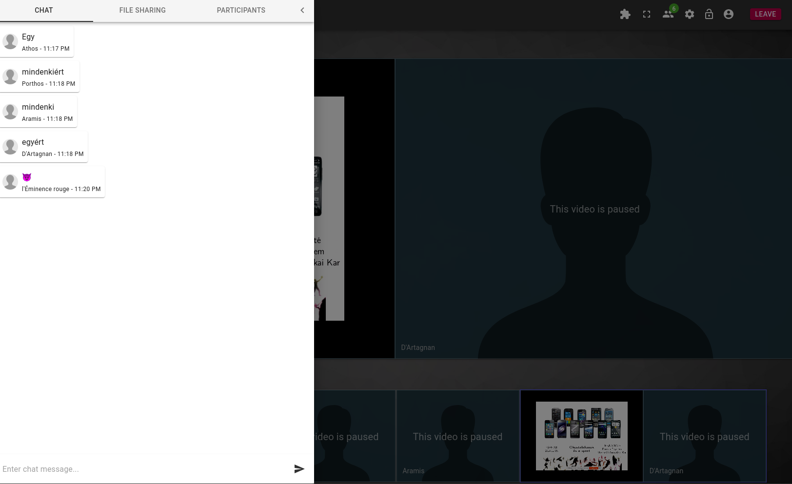

A konferencia a Széchenyi István Egyetem letsmeet felületén lesz online lebonyolítva.
A szoba neve psak, és ezen a linken érhető el: {{site.letsmeeturl}}.
A linkre kattintás után elsőként meg kell adnunk a nevünket, amivel a szobában szerepelni szeretnénk:
Ezen a ponton eldönthetjük, hogy csak hanggal szeretnénk belépni, vagy szeretnénk a kameránk képét is megosztani. A kameraképet a későbbiekben bármikor letilthatjuk, újra engedélyezhetjük. Az első alkalommal a belépést követően a böngésző engedélyt kér a mikrofon/webkamera használatához:
Az aktuális előadót leszámítva célszerű mindenkinek lenémítania a mikrofonját, amit legkönnyebben a saját kártyánk jobb oldalán lévő mikrofon ikonra kattintva tehetünk meg. Nem kell attól sem tartani, hogy véletlenül lenémítva hagyjuk magunkat: a rendszer egy felugró üzenettel figyelmeztet, ha beszélünk, de le vagyunk némítva. Ha csak röviden szólalnánk meg, akkor a lenyomva tartásával ideiglenesen fel tudjuk oldani a tiltást. Szekcióelnököknek, Q&A közben kérdezőknek ez a javasolt módszer. A kártyák jobb oldalán egy csík jelzi, ha valaki beszél.
A mikrofonhoz hasonlóan, a kameraképet is le tudjuk tiltani, vagy engedélyezni a középső piktogrammal.
A kártyák alapértelmezetten "demokratikus" nézetben vannak, és alapértelmezetten legfeljebb öt látszódik. Mindig azoknak a kártyái kerülnek előre akik aktívak. A megjelenített kártyák száma, illetve az elrendezés a jobb felső sarokban középen található fogaskerékre kattintva előugró panelen állítható át:
A "filmstrip" elrendezésben egy résztvevő kártyája jelenik meg nagyban, a többieké kicsiben alatta. Ha az aktív, kiemelt résztvevő képernyőt is oszt meg, akkor ez a kettő kártya jelenik meg:
A megosztott képernyőkép kártyáján (filmstrip nézetben csak az alsó kártyán) két gomb jelenik meg: az egyikkel teljes képernyőre tehetjük ki a megosztást, a másikkal egy új böngésző ablakban nyithatjuk meg.
A bal felső sarokban található hamburger ikonra kattintva egy 3 tabbal rendelkező felület kúszik be: beszélgetés, fájlmegosztás, résztvevők listája:
A beszélgetésnek akkor lehet haszna, ha valakinek nem működik a mikrofonja, vagy nagyon gerjed, zajos, stb., de mégis szeretne kérdést feltenni az előadónak. Fájlmegpsztásra valószínűleg a konferencián nem lesz szükség. A résztvevők listáján egyrészt láthatjuk, hogy éppen ki beszél, ki oszt meg, de ami a konferencia szemponjából érdekes: a nevünk melletti kézre kattintva "feltehetjük a kezünket", illetve később ugyanígy le is tehetjük.
A kártyánkon a harmadik, legalsó piktogrammal tudunk képernyőképet megosztani. A gombra kattintva választhatunk, hogy egy adott böngésző tabot, alkalmazásképet, vagy a teljes monitor tartalmát szeretnénk-e megosztani. A legutolsó opció általában minden igényt le tud fedni. Ha a gépünkre külső monitor is rá van kötve, akkor ki kell választani, melyiknek a képét szeretnénk megosztani. Ez egyben lehetőséget ad arra, hogy a másik monitoron kint legyen a konferenciabeszélgetés, a videó, amit be szeretnénk húzni és megmutatni, stb.
Egyszerre többen is megoszthatják a képernyőjüket. Az előadók mellett ennek még a szekcióelnököknél lehet értelme, akik egy visszaszámlálót megosztanak. Az egyik legegyszerűbb megoldás egy külön tabon megnyitni például ezt az oldalt, majd a fent leírtaknak megfelelően megosztani csak ezt a tabot.
Ha valaki felteszi a kezét, vagy ír a beszélgetéshez, akkor a hamburger ikonon meg fog jelenni egy értesítés indikátor. Oda kattintva, majd a résztvevők tabot kiválasztva láthatjuk, hogy kik tették fel a kezüket kérdezni, de az időrendi sorrendet nem.